树莓派部署
树莓派（Raspberry Pi） 是由英国慈善组织“Raspberry Pi基金会”开发的一款ARM微型单片机，其具备了一台标准计算机的绝大部分功能，常被用于提供各类小型服务类应用及嵌入式产品驱动。本项目基于Raspberry Pi 4B型号进行开发。
树莓派官方提供了一个基于Linux内核的专为树莓派硬件设计的Raspberry Pi OS 操作系统，可以直接在其官网进行镜像的下载。这里我们使用当前最新版（Kernel Version: 5.10） 进行开发。
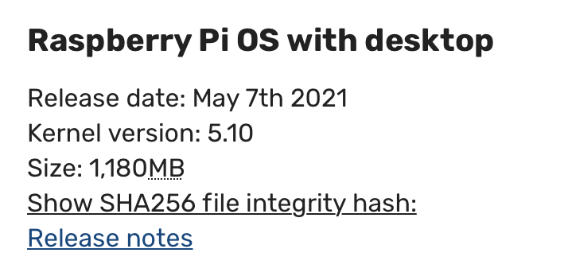
将系统烧录至SD卡并引导进入系统后，我们首先打开系统的SSH及VNC服务，使得其可以通过远程访问：
在弹出的GUI界面中选择Interfacing Options ，依次打开SSH及VNC配置项即可。
接下来我们来为树莓派创建一个热点，使得其他设备可以连接到树莓派的WIFI网络中以通过局域网访问后续的教学网站页面。首先我们安装在系统中安装hostapd （一个类Unix系统下可以提供热点访问的服务端工具）和dnsmasq （一个用于配置DNS和DHCP的工具）：
1 2 > sudo apt-get install hostapd
在/etc/hostapd/ 目录下创建一个hostapd.conf 配置文件，并在其中指定要创建热点的相关信息：
1 2 3 4 5 6 7 8 9 10 11 12 13 14 interface =wlan0driver =nl80211ssid =graspberryhw_mode =gchannel =7 wmm_enabled =0 macaddr_acl =0 auth_algs =1 ignore_broadcast_ssid =0 wpa =2 wpa_passphrase =1029384756 wpa_key_mgmt =WPA-PSKwpa_pairwise =TKIPrsn_pairwise =CCMP
随后我们将这一配置文件添加到/etc/default/hostapd 中：
1 DAEMON_CONF ="/etc/hostapd/hostapd.conf"
重启系统后，我们打开hostapd服务：
1 2 3 > sudo systemctl unmask hostapdenable hostapd
现在，我们便可以在其他设备上搜索到树莓派的热点信号了：
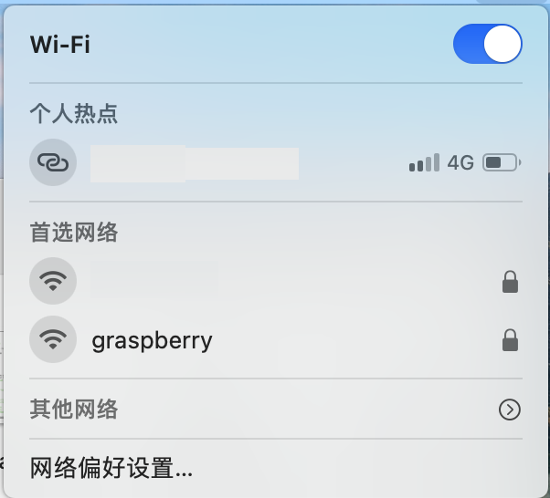
连接热点后，我们只需要使用SSH工具，便可以远程访问树莓派：
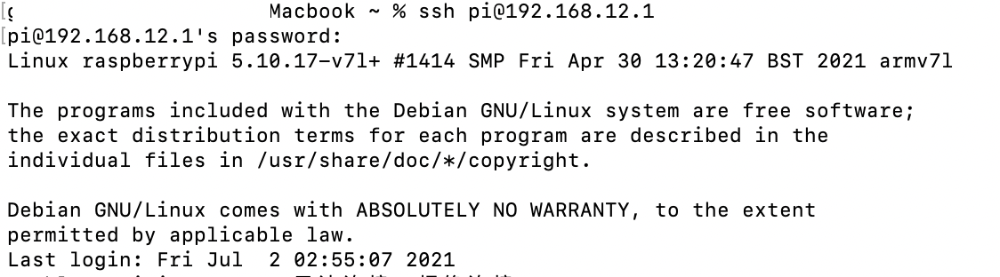
由于Raspberry Pi OS是Linux系统的一种，我们可以使用与开发环境类似的方式部署网站。首先我们从官网下载并安装Node运行环境包（https://nodejs.org/zh-cn/download/），并配置相应的环境变量：（.bash_profile）
1 2 3 export NODE_HOME=/home/pi/ node-v14.17.2-linux-armv7lexport PATH=$PATH :$NODE_HOME /bin export NODE_PATH=$NODE_HOME /lib/node_modules
随后我们使用apt-get安装MariaDB-Server 作为服务端数据库环境：
1 > sudo apt-get install mariadb-server-10.0
以安全模式进入数据库并修改数据库默认密码：
1 2 3 4 5 6 > sudo service mysql stopset authentication_string=PASSWORD('1029384756' ), plugin='mysql_native_password' where user='root' ;
现在我们的树莓派系统已经可以支持网页应用的部署了。
系统构架
整个树莓派在线教学系统分为用户端（前端） 及服务端（后端） ，其中用户端又分为学生端 和教师端 ，其基本系统构架如下图所示：
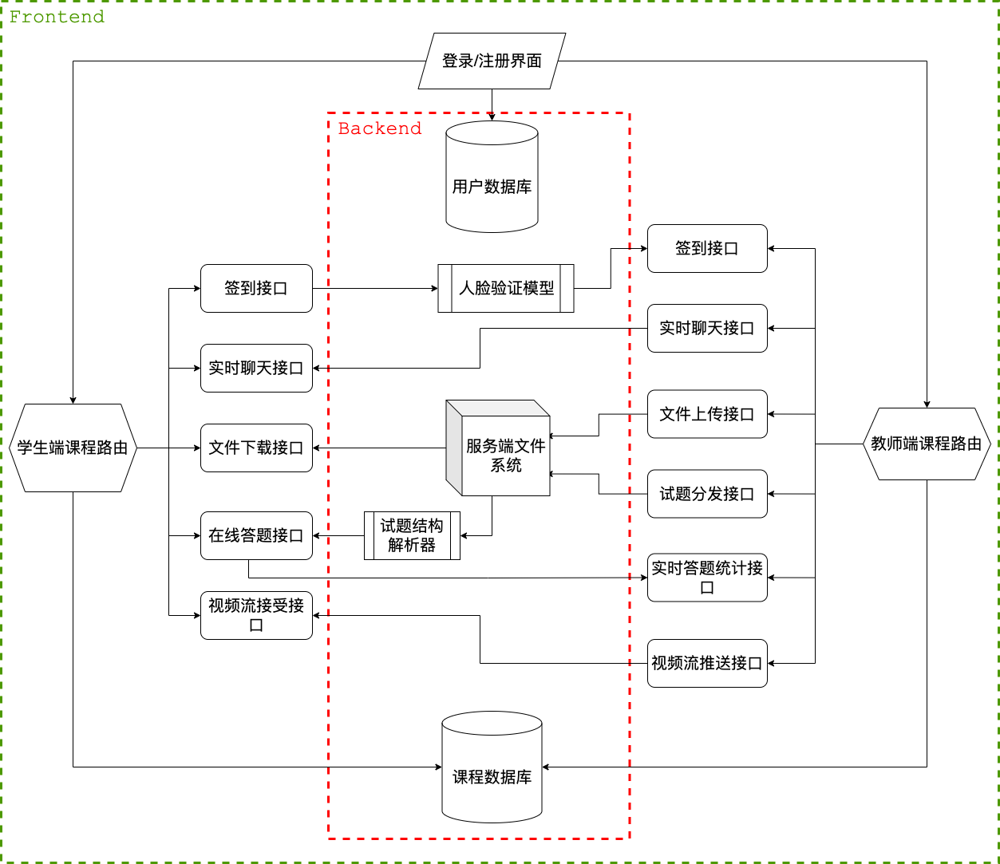structure
可以看到，整个系统的构架是十分清晰的。用户首先通过用户管理系统登录在线教学系统，系统会根据教师或学生身份分别跳转到教师端的课程路由界面或学生端课程路由界面。随后，系统通过请求后端的课程数据库来返回用户当前参与或教授的所有课程，用户可根据界面提示进入到相应的课程界面中。对于一个课程界面，系统提供了签到、实时聊天、文件下载、在线答题及视频推流5个基本模块，每个模块经过后端路由再传递给服务器文件系统或另一学生/教师客户端。对于学生签到机制，后端会通过深度学习模型对前端传入的照片进行人脸识别，并将相应的签到结果传给教师客户端；而对于在线答题机制，则由教师端先上传一定格式的题目描述及答题限制，再由后端的试题结构解析器进行解析分发给学生客户端，当学生完成答题后，再通过路由送到后端进行结果统计，并将统计结果发送回教师端展示。
以用户视角来看，教学系统的主体界面效果如下：
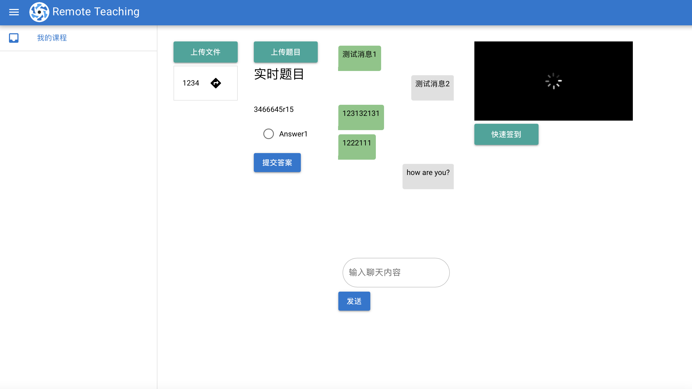
Quasar Framework与前端整合
由于该网站的前端元素较为繁杂，我们需要一个合适易用的前端框架来避免大量不必要的重复编码。Quasar Framework是一款基于Vue.js的前端UI框架，其开箱即用和跨平台的属性使得我们可以快速的对各类UI元素进行整合。要构架Quasar Framework开发环境是容易的，Quasar官方提供了一个基于Vuex的脚手架，我们以此为起点来进行网站前端的构建。
首先我们使用npm工具全局安装Quasar-CLI最新版：
1 > npm install -g @quasar/cli
系统会自动安装相关的必要的组建，包括Vue-CLI脚手架（如果没有自动安装的话，可以手动安装Vue-CLI最新版本）。
随后，我们在目标位置使用Quasar-CLI生成一个前端开发环境：
1 > quasar create frontend
系统会自动解析并生成所需的相应配置文件，并会在其中询问我们若干次相关参数的设置值，这里我们直接使用默认选项即可。
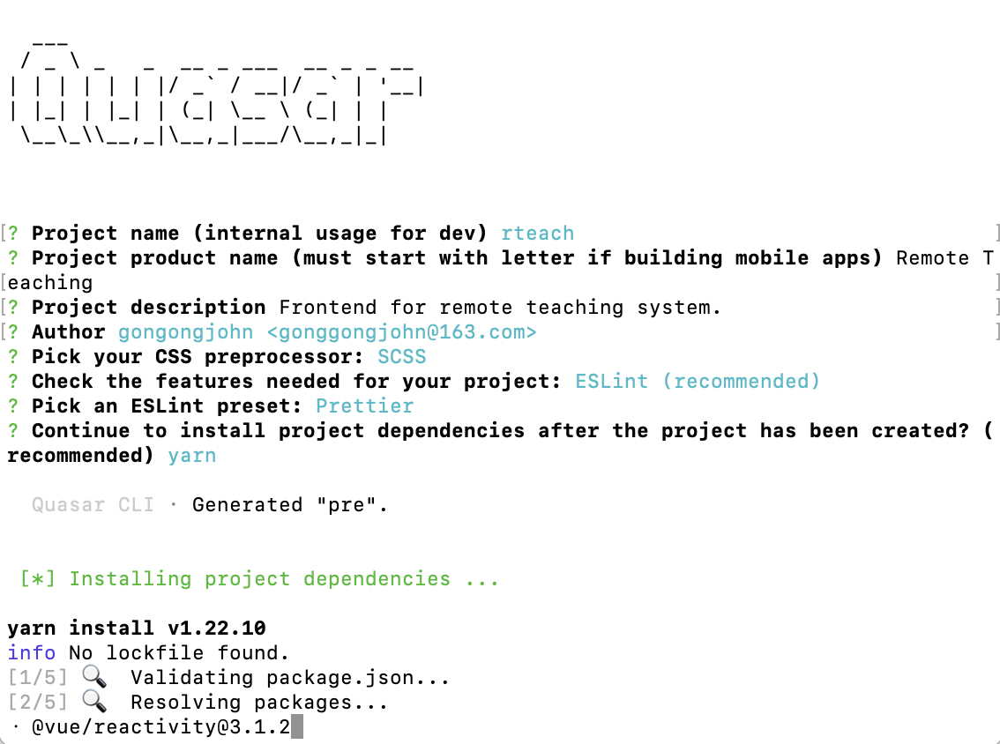
生成完成后，我们进入目录安装相应的Node依赖包：
现在，我们的前端开发环境就配置完成了。我们可以使用如下命令即时查看开发效果，也可以对整个应用进行打包送至后端进行整合：
1 2 > quasar dev
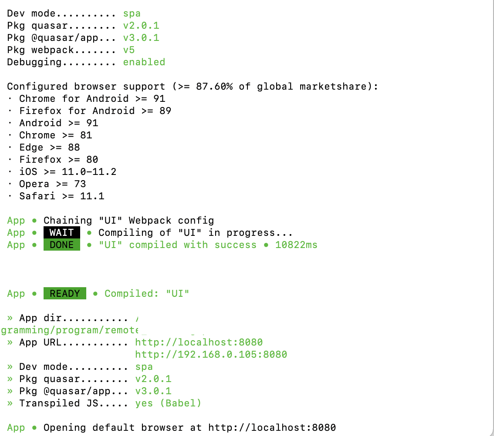
Vue将布局（Layout） 和页面（Page） 进行了分离，使得在同种布局下网站中的内容可以进行缺省替换，这正是本项目所需要的。对于本项目，我们设计了两种不同的界面布局，分别用于用户管理和授课窗口。网站的前端路由结构如下图所示：
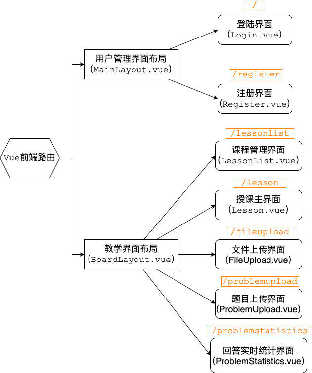
Express与后端路由
为了与前端达到最佳的适配，我们使用NodeJS+Express框架 作为服务端的实现基础。与Quasar类似，Express同样提供了一个官方脚手架用于搭建后端的开发环境。我们只需使用npm工具全局安装即可：
1 2 > npm install -g express
安装完成后，我们在目标位置生成一个新的后端项目：
Express脚手架会在目标位置自动生成相关的依赖文件：
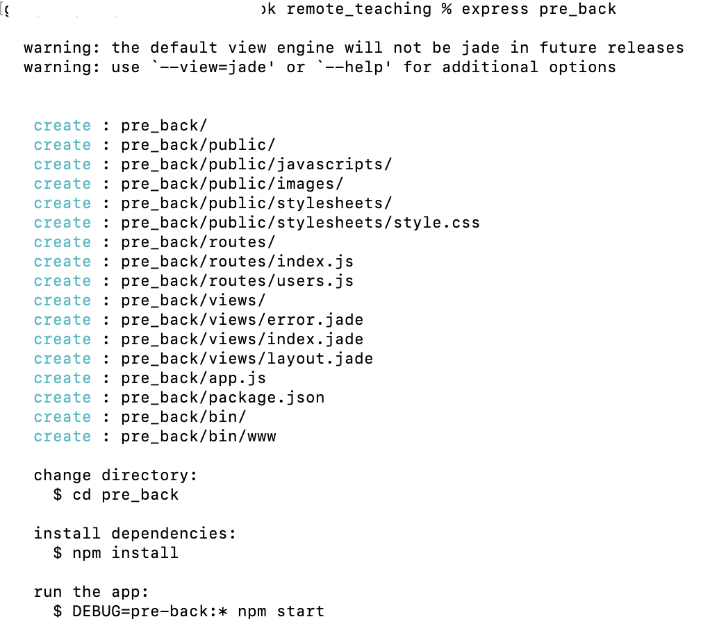
生成完后端环境后，我们进入目录，使用npm安装相应的依赖包，即可使用如下命令进行后端的测试：
本项目后端路由的整体结构如图所示：
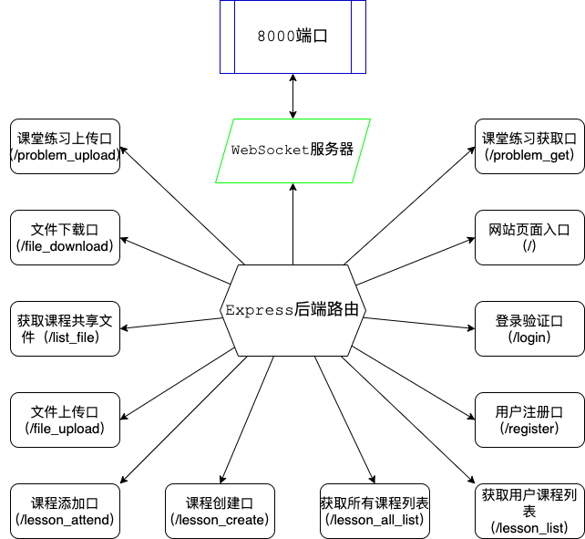
可以发现，除了根目录为网页推送接口，其他接口均为前端请求响应接口，故这些接口可以向用户隐去。此外，本项目还需要额外创建一个WebSocket服务器来响应实时的前后端数据交互请求。
用户管理
我们在数据库中创建一张表user 来管理用户的基本信息。对于一个用户而言，我们需要记录其用户名（username） 、密码（password） 、邮箱（email） 和身份（identity） 。此外，我们还需要记录其参加/开设的课程编号（lessons） ：
1 2 3 4 5 6 7 8 9 CREATE TABLE user(
用户的基本管理逻辑分为注册和登录。我们将两个逻辑分别封装在两个独立的函数中，并采用回调函数 的方式让路由调用。对于用户登录，我们只需要查询表中是否存在对应username键和password键的行即可。由于Node.JS中的Mysql插件为异步 访问的，这里我们需要使用Promise 函数来确保其执行顺序。为了向回调函数提供统一的接口，我们使用status 状态字来指示查询的结果和状态：
1 2 3 4 5 6 7 8 9 10 11 12 13 14 15 16 17 18 19 20 21 22 23 24 25 26 27 var login = function (username, password, callback )var sql_str = "SELECT username,password FROM user WHERE username=?" ;var sql_param = [username];var promise = new Promise (function (resolve, reject )function (err, result )if (err){else {(result ) => {var status = 0 ; if (result == undefined || result.length == 0 ){2 ;else if (result[0 ].password == password){1 ;else {3 ;
注册的逻辑同登录类似，只需将Mysql查询语句改为插入语句即可。这里需要注意的是，为了确保用户名的唯一性，我们在插入数据之前需首先查询表中是否已经存在对应的username键值，如果存在相同用户名，我们需要返回用户一个“用户名已存在”的错误：
1 2 3 4 5 6 7 8 9 10 11 12 13 14 15 16 17 18 19 20 21 22 23 24 25 26 27 28 29 30 31 32 33 34 35 36 37 38 39 var register = function (username, password, email, identity, callback )var sql_str = "SELECT username FROM user WHERE username=?" ;var sql_param = [username];var promise_query = new Promise (function (resolve, reject )function (err, result )if (err){else {(result ) => {var status = 0 ; if (result.length > 0 ){2 ;else {"INSERT INTO user(username, password, email, identity) VALUES (?,?,?,?)" ;var promise_insert = new Promise (function (resolve, reject )function (err, result )if (err){else {(result ) => {1 ;
课程管理
为了提高整个系统的可扩展性，我们希望能够并行的同时进行多个课程的在线教学。要做到这一点，我们需要将每个课程的工作环境隔离开来。幸运的是，在Mysql数据库中，我们可以创建一个唯一的ID使得其在每次插入数据的时候进行自增，因此我们可以直接使用这一ID作为课程的唯一标识。
我们首先创建一张lesson 表用于维护整个系统中的全局课程信息，这张表中应当维护课程名（name） 、授课教师ID（teacher） 及学生列表（students） 三个关键字：
1 2 3 4 5 6 7 CREATE TABLE lesson(
随后，我们需要封装一系列函数来对这一表格内容进行维护。当教师新创建一门课程时，前端会向教师询问课程名，并请求后端的/lesson_create 口进行课程创建：
1 2 3 4 5 6 7 8 9 10 11 12 13 14 15 16 17 18 19 20 21 22 23 24 25 26 27 28 29 30 31 32 33 34 35 36 37 38 39 40 41 42 43 44 45 <template > <q-page class ="flex flex-top-left" > <div style ="width: 100%; margin-top: 2%" > <q-btn color ="secondary" hidden ="false" padding ="sm xl" ref ="create_btn" style ="margin-left: 3%" label ="创建课程" @click ="createLesson = true" /> </div > <q-dialog v-model ="createLesson" > <q-card > <q-card-section align ="center" > <q-input outlined v-model ="lesson_name" class ="q-pa-sm" :rules ="[val => !!val || '课程名称不能为空！']" label ="课程名称" /> <q-btn color ="secondary" padding ="sm xl" label ="创建课程" @click ="onCreateLesson" v-close-popup /> </q-card-section > </q-card > </q-dialog > </q-page > </template > <script > export default { name: 'lessonList' , return { username: "" , createLesson: false , lesson_name: "" , var full_url = 'lesson_create?name=' + this .lesson_name + '&teacher=' + this .username; this .axios.get(full_url).then((response ) => { var status = response.data.status; alert("创建成功！" ); else { console .log("Error occurred!" ); }).catch((response ) => { console .log(response); </script >
创建课程的基本逻辑为无重名确认->创建课程->查询课程ID->将课程信息添加到教师授课列表中 ，我们可以快速写出相应的实现代码：
1 2 3 4 5 6 7 8 9 10 11 12 13 14 15 16 17 18 19 20 21 22 23 24 25 26 27 28 29 30 31 32 33 34 35 36 37 38 39 40 41 42 43 44 45 46 47 48 49 50 51 52 53 54 55 56 57 58 59 60 61 62 63 64 65 66 67 68 69 70 71 72 73 74 75 76 77 78 79 80 81 82 83 84 85 86 87 88 89 90 91 92 93 94 95 96 97 98 99 100 101 102 103 104 105 106 107 108 109 110 111 112 113 var createLesson = function (name, teacher, callback )var sql_str = "SELECT name FROM lesson WHERE name=? AND teacher=?" ;var sql_param = [name, teacher];var promise_check = new Promise (function (resolve_check, reject_check )function (err, result )if (err){else {(result_check ) => {var status = 0 ; if (result_check.length > 0 ){2 ;else {"INSERT INTO lesson(name, teacher) VALUES (?,?)" ;var promise_create = new Promise (function (resolve_create, reject_create )function (err, result )if (err){else {(result_create ) => {"SELECT id FROM lesson WHERE name=? AND teacher=?" ;var promise_getid = new Promise (function (resolve_getid, reject_getid )function (err, result )if (err){else {(result_getid ) => {if (result_getid == undefined || result_getid.length == 0 ){3 ;else {0 ].id, function (status_append )if (status_append != 1 ){3 ;else {1 ;var appendLesson = function (username, lesson_id, callback )var sql_str = "SELECT lessons FROM user WHERE username=?" ;var sql_param = [username];var status = 0 ; var promise_showlist = new Promise (function (resolve_showlist, reject_showlist )function (err, result )if (err){else {(result_showlist ) => {if (result_showlist == undefined || result_showlist.length == 0 ){2 ;else {var lesson_str = result_showlist[0 ].lessons;if (lesson_str == undefined || lesson_str == null ){String (lesson_id);else {"," + lesson_id;"UPDATE user SET lessons=? WHERE username=?" ;var promise_update = new Promise (function (resolve_update, reject_update )function (err, result )if (err){else {(resule_update ) => {1 ;
这里需要注意的是，由于MySQL中没有“数组”这一基本数据类型，因此我们使用字符串拼接的方式将课程ID以字符串的形式存储到用户的lessons字段中，当需要查询用户的课程列表时，再通过字符串拆分的方式将其还原为ID列表。
参与已有的课程与查询用户参与的课程列表的逻辑也基本类似，基本都是对通过课程ID作为唯一的键桥梁分别在user和lesson中进行查询操作：
1 2 3 4 5 6 7 8 9 10 11 12 13 14 15 16 17 18 19 20 21 22 23 24 25 26 27 28 29 30 31 32 33 34 35 36 37 38 39 40 41 42 43 44 45 46 47 48 49 50 51 52 53 54 55 56 57 58 59 60 61 62 63 64 65 66 67 68 69 70 71 72 73 74 75 76 77 78 79 80 81 82 83 84 85 86 87 88 89 90 91 92 93 94 95 96 97 98 99 100 101 102 103 104 105 106 107 108 109 110 111 112 var getLessons = function (username, callback )var sql_str = "SELECT lessons FROM user WHERE username=?" ;var sql_param = [username];var promise_showlist = new Promise (function (resolve_showlist, reject_showlist )function (err, result )if (err){else {(result_showlist ) => {var errno = 0 ; if (result_showlist == undefined || result_showlist.length == 0 ){1 ;undefined );else {var lesson_str = result_showlist[0 ].lessons;if (lesson_str == null ){else {var lesson_list = lesson_str.split("," );var fetch_total = lesson_list.length;var fetched_num = 0 ;var promise_loop = new Promise (function (resolve_loop, reject_loop )var detail_list = [];(lesson ) => {"SELECT name,teacher FROM lesson where id=?" ;var promise_detail = new Promise (function (resolve_detail, reject_detail )function (err, result )if (err){else {(result_detail ) => {if (result_detail == undefined || result_detail.length == 0 ){2 ;"Lesson doesn't exist!" );else {id : lesson, name : result_detail[0 ].name, teacher : result_detail[0 ].teacher});1 ;if (fetched_num == fetch_total){(result_loop ) => {var appendLesson = function (username, lesson_id, callback )var sql_str = "SELECT lessons FROM user WHERE username=?" ;var sql_param = [username];var status = 0 ; var promise_showlist = new Promise (function (resolve_showlist, reject_showlist )function (err, result )if (err){else {(result_showlist ) => {if (result_showlist == undefined || result_showlist.length == 0 ){2 ;else {var lesson_str = result_showlist[0 ].lessons;if (lesson_str == undefined || lesson_str == null ){String (lesson_id);else {"," + lesson_id;"UPDATE user SET lessons=? WHERE username=?" ;var promise_update = new Promise (function (resolve_update, reject_update )function (err, result )if (err){else {(resule_update ) => {1 ;
现在，我们可以在界面中自由创建/加入并随时查看当前参与的课程了：
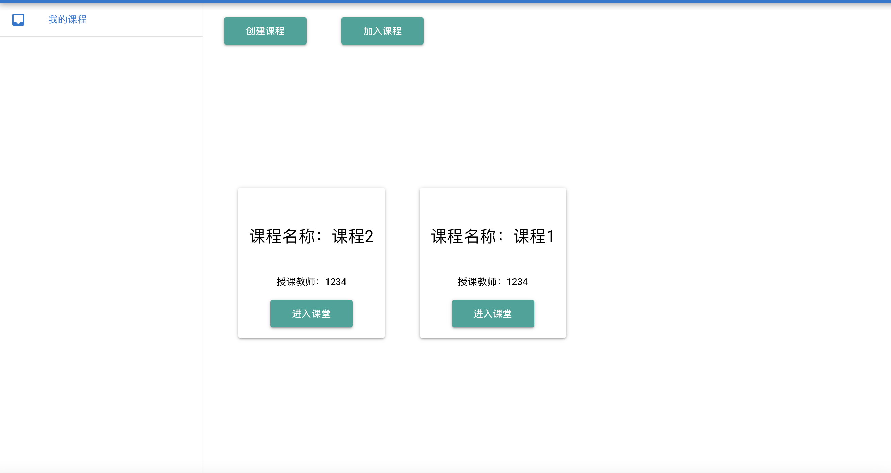
文件管理
接下来我们来实现文件共享的功能。Quasar Framework提供了一个用于文件上传的UI组件，我们可以直接通过调用它来提示用户选择文件并发送至后端：
1 2 3 4 5 6 7 8 9 <template > <q-page class ="flex flex-center" > <q-uploader url ="file_upload" :headers ="[{name: 'lesson_id', value: this.lesson_id }]" field-name ="file" /> </q-page > </template >
这里为了方便后续的资源隔离，我们在其发送的请求头中加入了课程ID号。
Quasar文件上传器使用了HTTP协议进行文件上传，因此我们需要在后端实现符合这一协议的文件接受通道。这里我们使用了一个名为multer 的NodeJS插件，它可以以极高的效率处理前端发来的文件数据。我们先在服务端文件系统上新建一个file_upload目录，用于专门管理课堂中的共享资源。随后，我们在后端路由中附上这一组件，并将接收到的文件统一保存至file_upload目录：
1 2 3 4 5 6 7 8 9 10 11 12 var multer = require ('multer' );var file_upload = multer({dest : 'file_upload/' });'/file_upload' , file_upload.single('file' ), function (request, response )function (200 , {'Content-Type' : 'application/json' JSON .stringify({'status' : 1 }));
由于需要支持多个课堂同时进行，我们需要将每个课程的资源隔离。为此，我们在创建课程时，为每个课程创建一个相应的子目录，以课程ID作为目录名。随后，我们封装一个文件重定位函数，当multer将前端发来的文件保存到目标位置后，随即将其移动至相应的子文件夹下：
1 2 3 4 5 6 7 8 9 10 11 12 13 14 15 16 17 18 19 20 21 22 23 24 25 26 27 28 29 30 31 32 var file_redirect = function (origin_path, origin_fullname, lesson_id, target_name, callback )console .log(origin_path, origin_fullname, lesson_id, target_name);'/' , function (exists )if (!exists){'/' , function (err )if (err){console .log(err);else {"/" + target_name, function (err )if (err){console .log("Rename error!" );else {else {"/" + target_name, function (err )if (err){console .log("Rename error!" );else {
现在，我们可以正常将文件上传至服务端并共享给其他用户了：
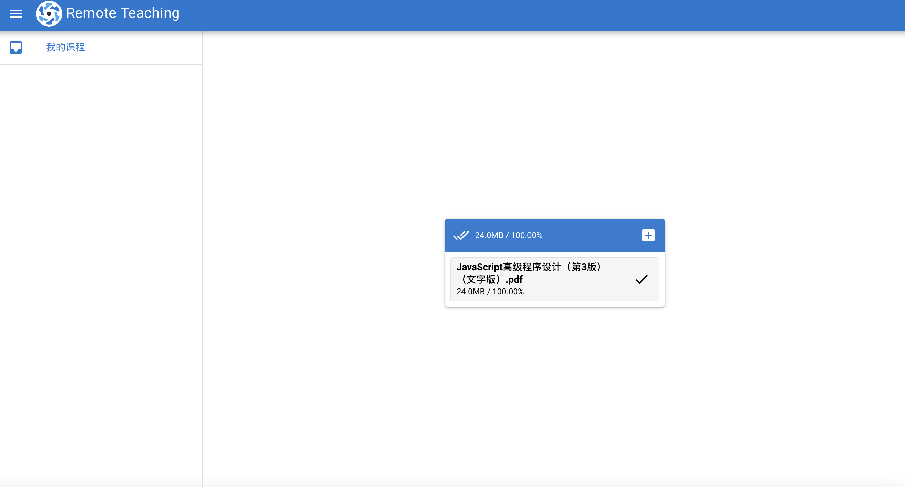
对于学生端而言，每当学生用户进入课程时，我们只需要列出对应文件夹下的文件名，并将其发回给前端，就可以让用户随时看到课堂中的所有共享文件：
1 2 3 4 5 6 7 8 9 10 11 12 13 14 15 16 17 var list_files = function (base_path, lesson_id, callback )'/' , function (exists )if (!exists){else {'/' , function (err, data )if (err){console .log(err);else {
当一个客户端请求下载某个课堂中的文件时，我们可以使用NodeJS自带的fs插件中的流式传输功能，将其输出管道重定向到请求回应流中即可：
1 2 3 4 5 6 7 8 9 10 11 12 13 14 router.get('/file_download' , function (request, response )var lesson_id = request.query.id;var filename = request.query.filename;if (lesson_id == undefined || filename == undefined ){else {200 , {'Content-Type' : 'application/octet-stream' ,'Content-Disposition' : 'attachment; filename=' + encodeURI (filename)'file_upload/' + lesson_id + '/' + filename).pipe(response);
至此，我们已经实现了一个基本的文件共享功能，效果如下：
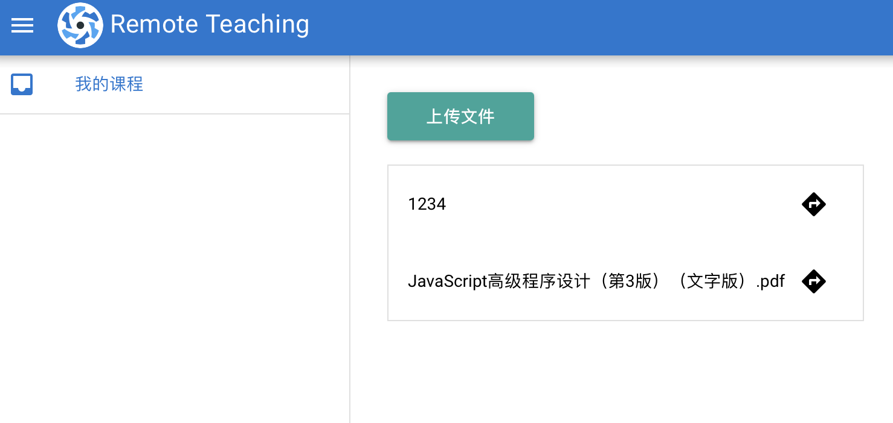
实时做题
在在线课堂系统中，有时教师希望能够即时给学生分发一道课堂练习，并实时看到学生的答题状况，这就需要我们实现一套在线做题系统。
在线做题首先需要教师端上传一道指定的题目。以选择题为例，为了方便结构化解析，我们要求教师上传一个固定格式的json文件作为题目（当然也可使用深度学习技术自动解析非结构化的题目信息，不过这一工程量将大幅度增长，在此我们不做讨论）：
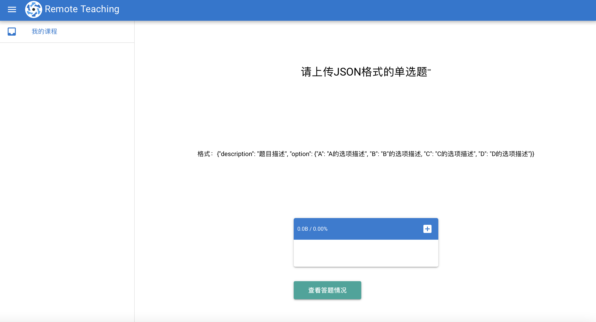
题目共享功能实现的主体思路与文件共享类似，我们只需要让教师端将题目以文件的形式发送给服务端，再通过服务端将题目分发给学生端即可。不过，为了让用户即时看到可阅读的题目信息，我们还需要在后端将题目文件解析为格式化信息，并通过json字符串的方式将结构化的题目发送给前端：
1 2 3 4 5 6 7 8 9 10 11 12 13 14 15 16 17 18 19 20 var get_problem = function (problem_base, lesson_id, callback )'/question.json' , function (exists )var status = 0 ; if (!exists){2 ;undefined );else {var data = fs.readFileSync(problem_base + lesson_id + '/question.json' , 'utf8' );if (typeof data == 'string' ){1 ;else {3 ;undefined );
前端展示实现：
1 2 3 4 5 6 7 8 9 10 11 12 13 14 15 16 17 18 19 20 21 22 23 24 25 26 27 28 29 30 31 32 33 34 35 36 37 38 39 40 41 42 43 44 45 46 47 48 49 50 51 52 53 54 55 56 57 58 59 60 61 <template > <q-page class ="flex flex-top-left" > <div style ="margin-top: 3%; margin-left: 3%" > <q-btn color ="secondary" padding ="sm xl" style ="margin-bottom: 5%" label ="上传题目" @click ="onProblemUpload" /> <q-form @submit ="onSubmitAnswer" class ="q-gutter-md" > <h5 > 实时题目 </h5 > <p > {{problem_description}} </p > <q-option-group v-model ="chosen_answer" :options ="answer_options" color ="primary" /> <q-btn label ="提交答案" type ="submit" color ="primary" /> </q-form > </div > </q-page > </template > <script > export default { name: 'lesson' , return { username: "" , problem_description: "3466645r15" , chosen_answer: "" , label: "Answer1" , value: "A" mounted: function ( this .onInitLesson(); this .username = this .$route.query.username; this .lesson_id = this .$route.query.lesson_id; this .getProblem(); var full_url = 'problem_get?id=' + this .lesson_id; this .axios.get(full_url).then((response ) => { var problem_json = response.data; if (problem_json != undefined ){ this .problem_description = problem_json.description; for (var key in problem_json.options){ this .answer_options.push({ console .log(this .answer_options); }).catch((response ) => { console .log(response); </script >
现在，学生用户已经可以随时接受教师下发的课堂练习并做答了。接下来，我们需要让教师端能够实时得到学生的做题反馈。为了实现这一功能，我们需要让前端实时监听后端的数据变化，并在后端产生数据变化时发送消息给前端。在NodeJS中，我们可以使用WebSocket插件来实现。
首先，我们在服务端创建一个WebSocket服务器，并监听8000端口：
1 2 3 4 5 var ws = require ('nodejs-websocket' );var ws_server = ws.createServer(function (socket )8000 );
当学生前端点击提交答案按钮时，我们通过这一端口将回答信息通知给后端：
1 2 3 4 5 6 7 8 9 10 11 12 13 14 15 16 17 18 19 20 21 22 23 24 25 26 27 28 29 30 31 32 33 34 35 36 37 38 39 40 41 42 43 44 45 46 47 48 <template > <q-page class ="flex flex-top-left" > <div style ="margin-top: 3%; margin-left: 3%" > <q-form @submit ="onSubmitAnswer" class ="q-gutter-md" > <h5 > 实时题目 </h5 > <p > {{problem_description}} </p > <q-option-group v-model ="chosen_answer" :options ="answer_options" color ="primary" /> <q-btn label ="提交答案" type ="submit" color ="primary" /> </q-form > </div > </q-page > </template > <script > export default { name: 'lesson' , return { username: "" , chosen_answer: "" mounted: function ( this .onInitLesson(); var full_path = window .document.location.href; var route_path = this .$route.path; var base_path = full_path.substring(7 , full_path.indexOf(route_path)); var base_path_stripped = base_path.substring(0 , base_path.indexOf(':' )); this .web_socket = new WebSocket("ws://" + base_path_stripped + ":8000" ); this .web_socket.onopen = () => { console .log("Websocket连接成功！" ) this .web_socket.onmessage = (event ) => { console .log(event.data); destroyed: function ( this .web_socket.close(); this .web_socket.send(JSON .stringify({type : "problem_answer" , username : this .username, lesson_id : this .lesson_id, answer : this .chosen_answer})); </script >
对于每一个课程实例，服务端维护着一个当前题目的回答列表，每当后端收到前端发来的回答通知时，便将对应的计数器加一。随后，服务端会通知教师客户端更新实时统计信息：
1 2 3 4 5 6 7 8 9 10 11 12 13 14 15 16 17 18 19 20 21 22 23 24 25 26 27 28 29 30 31 var ws_server = ws.createServer(function (socket )var answer_status = {"6" : {"A" : 0 ,"B" : 0 ,"C" : 0 ,"D" : 0 'text' , function (str )try {var obj=JSON .parse(str);if (typeof obj == 'object' && obj ){if (obj.type == "problem_answer" ){var lesson_id = obj.lesson_id;var answer = obj.answer;if (lesson_id != undefined && answer != undefined ){1 ;(connection ) => {JSON .stringify(answer_status));else {console .log("Error phasing json!" );catch (e) {console .log(e);8000 );
对于前端统计信息，这里我们使用Echarts图表的形式将答题的即时情况展现给教师：
1 2 3 4 5 6 7 8 9 10 11 12 13 14 15 16 17 18 19 20 21 22 23 24 25 26 27 28 29 30 31 32 33 34 35 36 37 38 39 40 41 42 43 44 45 46 47 48 49 50 51 52 53 54 55 56 57 58 59 60 61 62 63 64 65 66 67 68 69 70 71 72 73 74 75 76 77 78 79 <template > <q-page class ="flex flex-center" > <div id ="answer_chart" :style ="{width: '300px', height: '300px'}" > </div > </q-page > </template > <script > export default { name: 'problemStatistics' , return { username: "" , web_socket: null , chart: null mounted: function ( this .onInitLesson(); var echarts = require ('echarts' ); this .chart = echarts.init(document .getElementById('answer_chart' )); this .chart.setOption({ title: { text : '学生实时答题情况统计' }, data: ["A" , "B" , "C" , "D" ] name: '选择人数' , type: 'bar' , var full_path = window .document.location.href; var route_path = this .$route.path; var base_path = full_path.substring(7 , full_path.indexOf(route_path)); var base_path_stripped = base_path.substring(0 , base_path.indexOf(':' )); this .web_socket = new WebSocket("ws://" + base_path_stripped + ":8000" ); this .web_socket.onopen = () => { console .log("Websocket连接成功！" ) this .web_socket.onmessage = (event ) => { var latest_data = JSON .parse(event.data); if (latest_data != undefined ){ var stat_dict = latest_data[this .lesson_id]; var x_tags = []; var y_values = []; for (var key in stat_dict){ this .refreshChart(x_tags, y_values); this .username = this .$route.query.username; this .lesson_id = this .$route.query.lesson_id; this .chart.setOption({ title: { text : '学生实时答题情况统计' }, name: '选择数' , type: 'bar' , </script >
页面效果如下：
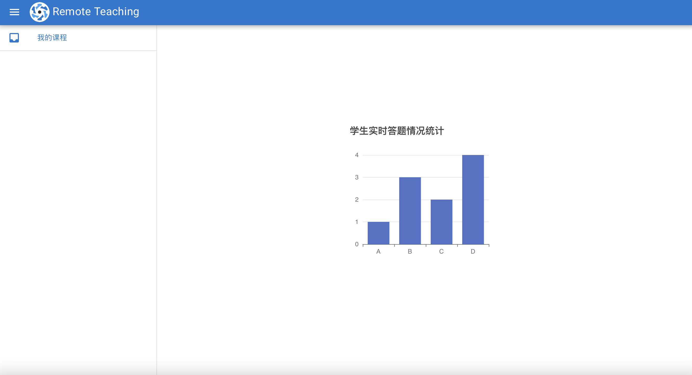
快速签到
视频推流
远程访问
至此，我们已经实现了树莓派在线教学系统的绝大部分基本功能。我们将其通过SFTP上传至树莓派中的目标目录下，并启动服务。通过树莓派提供的热点，我们在另一台设备上远程访问树莓派的网站接口，发现其已经可以正常工作：
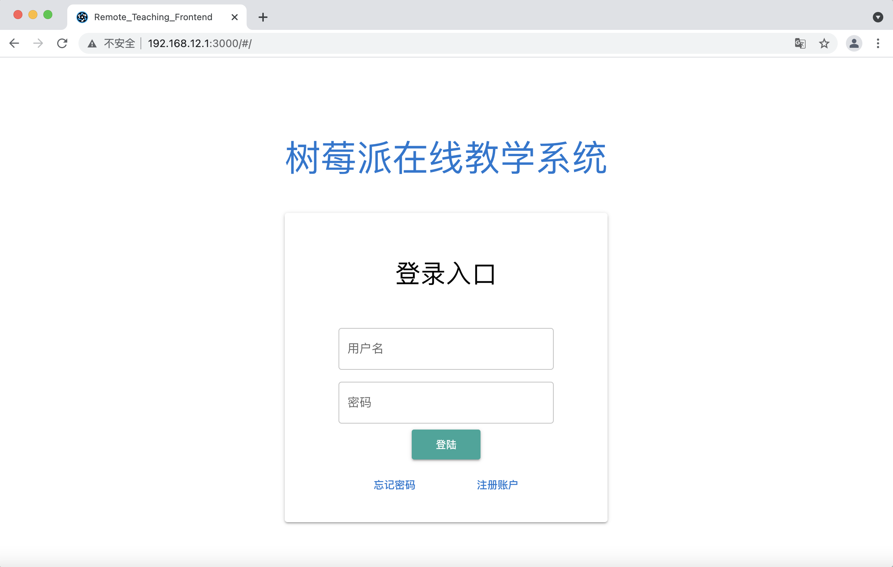
同样的，我们也可以使用移动端访问树莓派上的教学服务：
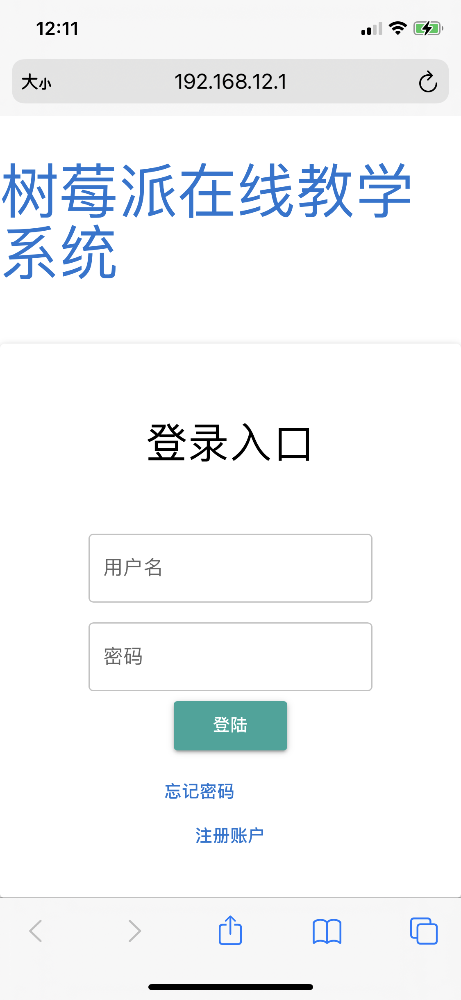